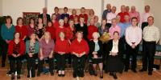

|
Itchen Valley Choral Society Itchen Valley Choral Society was formed in 1922 and performed in some of the earliest Winchester and County Music Festival concerts. We have never been a large choir. In the earlier years the members came from a very rural area, from hamlets and villages throughout the Itchen Valley. We currently have 40 regular members and the area from which people travel is much further than the earlier years. We have two concerts which we perform in each year, our Christmas concert and the Winchester and County Music Festival in May. The Christmas concert is an evening of fun and joviality followed by an American Supper while the WCMF concert in May is a much bigger affair with local choirs joining each other for a performance either in Winchester Cathedral or Romsey Abbey. Our Music Director is Jane Bryant. Jane has a background in music education and arts management and in her current day job, is Chief Executive of Artswork - a national Youth Arts Development Agency. A graduate in music from Leeds University with a postgraduate certificate in music education, Jane has sung with a number of choirs including the St Magnus Cathedral Singers, Orkney, the Scottish Chamber Choir, Edinburgh, and the Pro Nobis Singers, Cumbria. She has also conducted a wide range of choirs and ensembles including acting as principal Conductor of the Dubai and Sharjah Singers and Orchestra. Along with the Itchen Valley Choral Society, Jane currently also conducts the Candover Valley and Benefice Choir. We meet on a Wednesday evening, 7.45 - 9.30, at Itchen Abbas and Avington Village Hall, we are always pleased to welcome new singers - no auditions required, just a passion for music and a willingness to try! Contact the Society SecretaryGabby O'Grady Email: ivcs.secretary@gmail.com |
Click image to view |